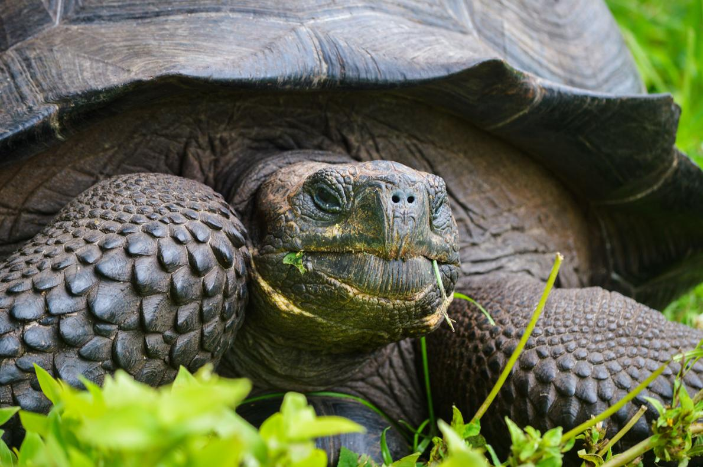
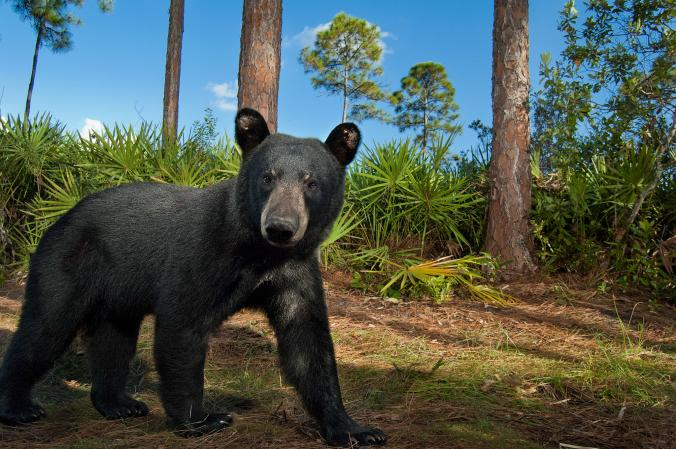
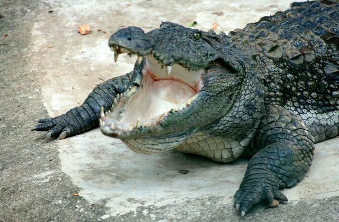
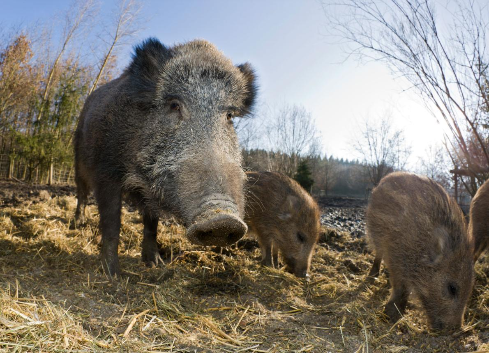

Saving wildlife is at the core of WWF's mission. Why? Because animal populations are disappearing at an alarming rate. But even in the face of threats like poaching, habitat loss and overuse of natural resources, WWF is creating a better future for wildlife every day. Protecting these species also contributes to a thriving, healthy planet for people's health and well-being from forests that slow climate change and filter water to oceans that provide more than one-sixth of the world's food.
In observance of the World Wildlife Day's mission of highlighting wildlife crimes, here are some of the animals that fall prey to people's thirst for trophies and exotic cures.
A new study ranks wildlife tourist attractions around the world based on how they treat their animals and whether they help save species.
A new species of tortoise has been hiding in plain sight in the Galápagos. Now it has a name.
The bear population has risen in the state, but conservationists wonder what a weeklong hunt will accomplish.
A new study from researchers out of Australia's La Trobe University and Germany's Max Planck...
Some wild boar wash their food before eating it. The finding shows the pigs can distinguish clean from dirty food and delay gratification for the sake of a clean meal.